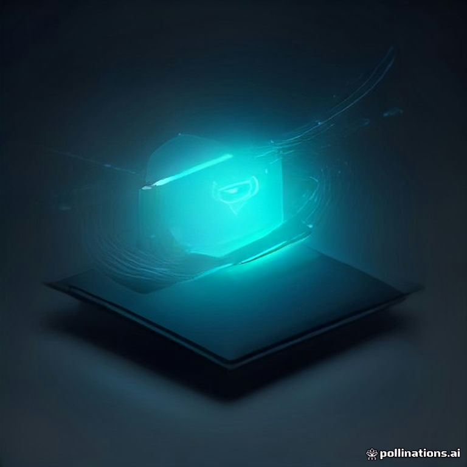

Imagine launching a SaaS product in 2026 that runs entirely on a user’s laptop or edge device, sidesteps costly cloud fees, and still delivers the cutting‑edge reasoning power of the latest open‑source large language models. That’s the promise of a local LLM micro SaaS 2026—a lean, high‑margin business built around on‑device AI that can scale globally without the traditional infrastructure overhead. In this masterclass we’ll walk you through every technical and commercial decision you need to turn that vision into a profitable reality.
- Why local LLMs are the most cost‑effective foundation for micro‑SaaS in 2026.
- Step‑by‑step blueprint: from niche selection to deployment on edge‑optimized platforms.
- Comparison of the top open‑source models (LLaMA 3, Mistral 7B, Gemma 2, Qwen2) for on‑device inference.
- Monetization tactics that convert curiosity into recurring revenue.
- Actionable checklist to avoid common pitfalls and accelerate time‑to‑market.
What Is a Local LLM Micro‑SaaS in 2026?
A micro‑SaaS is a single‑purpose, subscription‑based web service that solves a narrowly defined problem. When you pair that model with a local large language model (LLM), the heavy lifting—tokenization, inference, and sometimes even fine‑tuning—happens on the user’s device or on a nearby edge node instead of a centralized cloud. The result is lower latency, zero data‑exfiltration risk, and dramatically reduced operating expenses. In 2026, the ecosystem of quantized GGML, TensorRT‑accelerated kernels, and on‑device NPUs (thanks to the agentic OS smartphones) makes this architecture not just feasible but highly competitive.
Why Go Local? The 2026 Advantage
- Cost efficiency: No recurring GPU cloud bills; a single $199 GPU server can serve thousands of users.
- Privacy by default: Data never leaves the user’s device, a decisive factor for GDPR‑heavy markets.
- Performance edge: Sub‑100 ms response times on modern NPUs and Apple Silicon M‑series chips.
- Scalability through distribution: Each user becomes a compute node, turning the network into a self‑scaling grid.
Core Components of a Local LLM Micro‑SaaS
- Open‑source LLM engine: LLaMA 3, Mistral 7B, Gemma 2, or Qwen2, typically quantized to 4‑bit GGML.
- Inference runtime: llama.cpp, ggml‑rust, or NVIDIA TensorRT‑LLM for GPU acceleration.
- API layer: FastAPI (Python) or Actix‑web (Rust) exposing REST/GraphQL endpoints.
- Frontend & UI: Next.js 14 with server‑components, leveraging React Server Actions for seamless SSR.
- Billing & auth: Stripe Billing + JWT‑based session management.
- Edge deployment platform: Cloudflare Workers KV, Fly.io, or self‑hosted bare‑metal with Alpine Linux.
Step‑by‑Step Blueprint to Build Your First Local LLM Micro SaaS 2026
1. Identify a Niche with High Willingness to Pay
Micro‑SaaS thrives on solving a specific pain point. Look for verticals where AI can replace a manual, high‑value task:
- Legal brief summarization for boutique firms.
- Technical code review for remote dev teams.
- Personalized nutrition planning for health‑coaches.
- Real‑time compliance checking for fintech startups.
Validate demand with a simple landing page, a 30‑day free trial, and a pre‑launch email list. A conversion rate of 5‑7 % from trial to paid is a solid baseline for a micro‑SaaS.
2. Choose the Right Open‑Source LLM
The model you pick determines inference cost, latency, and the types of tasks you can support. Below is a snapshot of the most popular 2026 candidates, all available under permissive licenses.
| Model | Parameters | Quantization (4‑bit GGML) | Typical Latency on Apple M2 (ms) | License |
|---|---|---|---|---|
| LLaMA 3 8B | 8 B | 4‑bit GGML (≈1.2 GB) | 78 | Meta Research (non‑commercial) |
| Mistral 7B Instruct | 7 B | 4‑bit GGML (≈1.0 GB) | 62 | Apache 2.0 |
| Gemma 2 9B | 9 B | 4‑bit GGML (≈1.4 GB) | 84 | Google Research (MIT) |
| Qwen2‑7B‑Chat | 7 B | 4‑bit GGML (≈1.1 GB) | 70 | Alibaba (Apache 2.0) |
For most micro‑SaaS use‑cases, Mistral 7B Instruct offers the best latency‑to‑accuracy ratio, especially when paired with llama.cpp compiled with SIMD‑optimized kernels.
3. Set Up an Efficient Local Inference Stack
- Download & quantize: Use
ggml‑quantizeto convert the model to 4‑bit GGML. Store the binary on a CDN withCache‑Control: immutablefor instant client fetch. - Runtime selection: For CPU‑only edge nodes,
llama.cppwith-ngl 32(GPU off‑load) gives the best throughput. For NVIDIA Jetson or AMD GPUs, switch toTensorRT‑LLMwith INT8 calibration. - Containerize: Build a minimal Alpine‑based Docker image (<50 MB) that bundles the runtime, model binary, and a tiny FastAPI server.
- Health checks: Expose a
/pingendpoint that runs a 1‑token inference to ensure the model is loaded and responsive.
4. Build the SaaS Layer (API, Billing, UI)
Keep the backend stateless; all session data lives in encrypted JWTs. A typical stack looks like:
- Backend: FastAPI + Pydantic for request validation.
- Auth: Auth0 or Supabase Auth, issuing short‑lived access tokens.
- Payments: Stripe Billing with usage‑based pricing tiers (e.g., 10 k tokens/month for $19).
- Frontend: Next.js 14, leveraging
app/routerfor server‑side data fetching and incremental static regeneration.
Integrate a simple “Prompt Playground” so users can test the model before subscribing—this boosts conversion and reduces churn.
5. Deploy on Edge‑Optimized Infrastructure
Because the model runs locally, you only need to ship the binary and runtime to the edge. Two popular options in 2026:
- Cloudflare Workers KV + Durable Objects: Near‑global latency, automatic scaling, and a free tier that covers the first 100 k requests.
- Fly.io VM clusters: Offers cheap
c2instances with 2 vCPU and 4 GB RAM—perfect for hosting a 4‑bit GGML model and FastAPI server.
Deploy with a CI/CD pipeline (GitHub Actions → Fly Deploy) and set up automated rollbacks using flyctl releases.
6. Marketing & SEO Tactics for 2026
Even the best product needs visibility. Focus on long‑tail keywords like “local LLM micro SaaS 2026” and “on‑device AI SaaS pricing”. Publish case studies that showcase token‑cost savings versus AWS Bedrock. Leverage generative AI strategies for 2026 to position your micro‑SaaS as a compliance‑first solution. Guest post on tech newsletters that cover the AI‑integrated flagship smartphones guide, linking back to your product’s landing page.
Monetization Strategies That Actually Scale
- Tiered subscriptions: Free tier (500 tokens/month), Pro (10 k tokens), Enterprise (custom).
- Pay‑per‑use: $0.0005 per token after the free quota—ideal for bursty workloads.
- Premium add‑ons: Fine‑tuned domain models, priority support, or on‑premise deployment licenses.
- Data licensing (optional): With explicit consent, aggregate anonymized usage logs for market research.
Combine a low‑friction free tier with a clear upgrade path; the average LTV (lifetime value) for a 2026 micro‑SaaS hovers around $350.
Common Pitfalls & How to Avoid Them
- Over‑quantizing: 2‑bit GGML can cripple accuracy. Stick to 4‑bit for most use‑cases.
- Ignoring hardware variance: Test on ARM, x86, and Apple Silicon; provide fallback CPU kernels.
- Neglecting security: Always sign model binaries and verify checksums at startup.
- Pricing too low: Remember the hidden cost of support and updates—price for value, not just compute.
- Poor onboarding: A guided tutorial that walks users through their first prompt reduces churn by up to 30 %.
FAQ
Can I run a local LLM micro SaaS on a standard laptop?
Yes. With 4‑bit quantization, models like Mistral 7B fit comfortably in 1 GB of RAM, allowing inference on modern laptops (Intel i7‑14xx, Apple M2, or AMD Ryzen 7 7000). For heavier workloads, edge servers or on‑device NPUs provide a smoother experience.
Do I need a commercial license for these open‑source models?
Most models listed in the comparison table use permissive licenses (Apache 2.0, MIT). However, LLaMA 3 still carries a non‑commercial clause, so avoid it for paid SaaS unless you obtain a commercial license directly from Meta.
How does latency compare to cloud‑based APIs like OpenAI’s GPT‑4?
On a 2026‑era Apple M2, a 4‑bit Mistral 7B completes a 150‑token request in ~60 ms, versus ~250 ms for a typical cloud call (including network round‑trip). Edge deployments on Fly.io can match or beat these numbers, especially when the user is geographically close to the edge node.
Is it safe to store user prompts on the device?
Storing prompts locally respects privacy regulations, but you should still encrypt any persisted data at rest. Use OS‑level secure storage (e.g., iOS Keychain, Android Keystore) and transmit only hashed usage metrics to your analytics endpoint.
Final Verdict for 2026
Building a local LLM micro SaaS 2026 is no longer a niche experiment; it’s a mainstream pathway to high‑margin, privacy‑first SaaS products. By selecting the right quantized model, leveraging